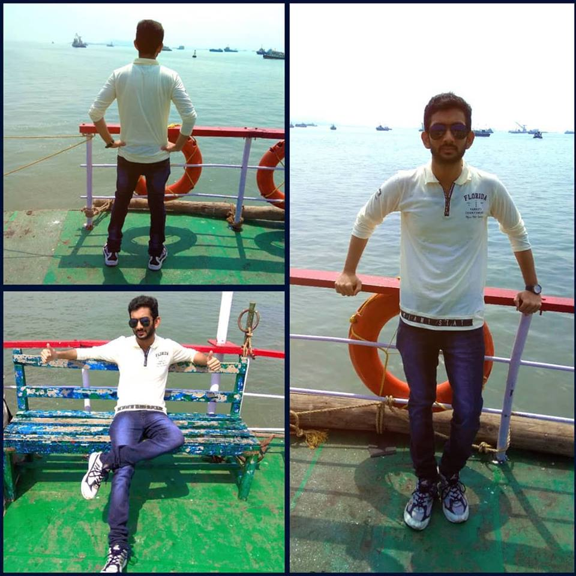

Hello
I am Mohamed Arifulla B.E.,(CSE),graduated from Velammal College of Engineering and Technology,Tamil Nadu.At present I am working in Virtusa,Hyderabad as Associate Engineer.My Parents are Govt employees working in Tamil Nadu.My elder brother is a post graduate working in TCS and My elder sister also a Post graduate.
I have interest in programming, music, sport and fantasy literature. Computer was first appered in my life when I was seven year old. I used to play games with computer.
Pursuing my strong interest in Computer Science has over the years enabled me to develop keen analytical and reasoning skills. Through the course of the four-year Bachelor of Engineering (BE) degree program in Computer Science and Engineering at the prestigious Velammal College of Engineering and Technology, I acquired an overall perspective of this scientific discipline, with a particular interest in Networks and Object Oriented Programmings.
The practical orientation of in-depth coursework will allow me to not only acquire a clear understanding of the subject but also the skills to execute it. I am confident my exposure to such initiatives would quite augment my knowledge base and add tremendous value in enabling me to realize my professional goals